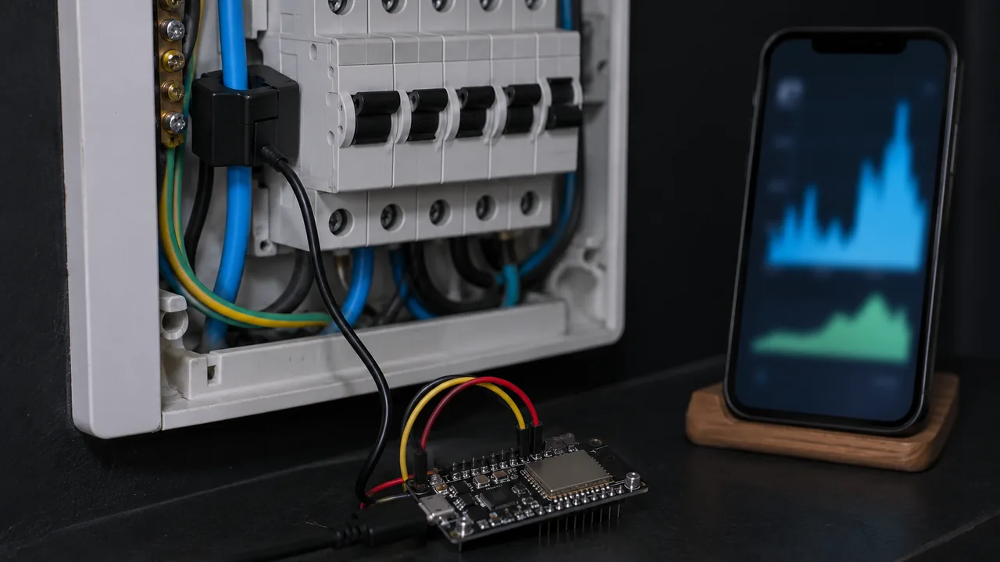
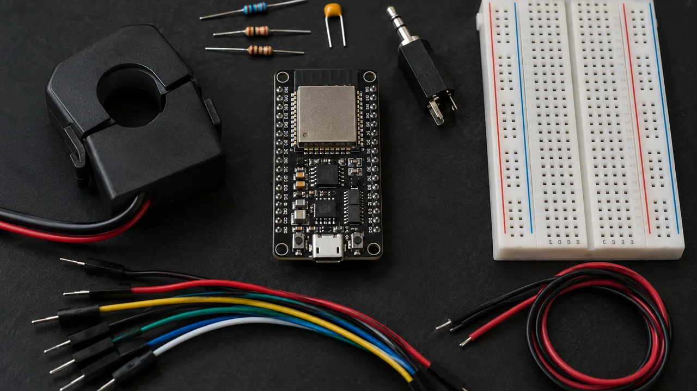
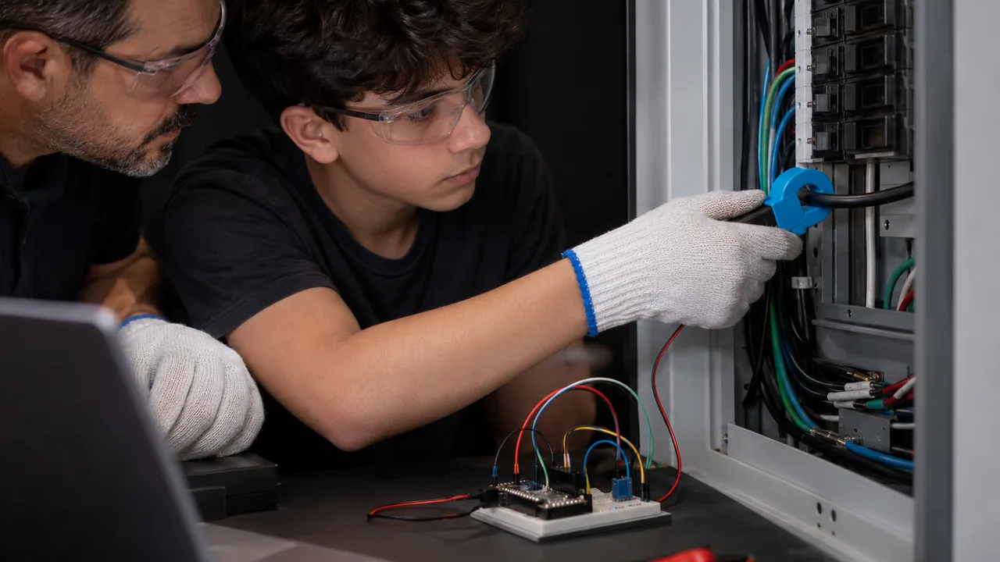
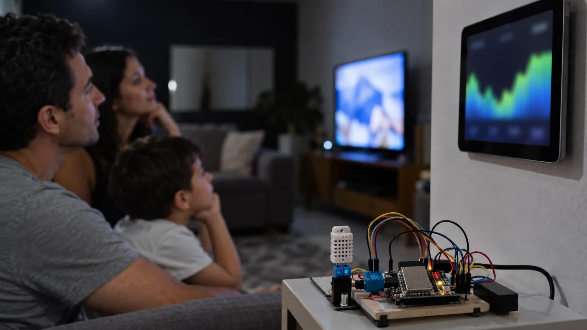

Solução 5 · EnergiaO consumo da casa em tempo real e em reais
Uma garra abraça o fio de energia e mede a corrente sem cortar nada. O ESP32 calcula quantos watts a casa está puxando, soma os kWh do mês e mostra em reais no celular. Serve para o vizinho que levou susto com a conta e para o pequeno comércio que quer saber onde está o gasto.
Como funciona
A garra sente o campo do fio
A corrente que passa num fio cria um campo magnético em volta dele. A garra SCT-013 é um transformador em forma de pregador: ela transforma esse campo numa tensão pequena, de até 1 V quando passam 30 A. Como a corrente de casa é alternada, essa tensão sobe e desce 60 vezes por segundo. O ESP32 lê 2000 vezes seguidas, calcula a média do "tamanho" da onda (o valor RMS) e multiplica pela tensão da sua casa.
Peças
Lista de compras

| Peça | Para que serve | Preço aprox. |
|---|---|---|
| ESP32 DevKit V1 (30 pinos) | O cérebro, com Wi-Fi | R$ 30–45 |
| Sensor de garra SCT-013-030 (saída em tensão, 1 V = 30 A) | Mede a corrente sem cortar o fio. Compre o "030", que já tem o resistor de carga dentro | R$ 35–60 |
| Conector P2 fêmea (jack 3,5 mm) | Recebe o plugue do sensor | R$ 3–6 |
| 2 resistores 10 kΩ + capacitor 10 µF | Levantam a onda até o meio da faixa do ESP32 (1,65 V) | R$ 2–5 |
| Protoboard e jumpers | Ligações sem solda | R$ 12–20 |
| Carregador 5 V + cabo USB | Alimenta o ESP32 | R$ 0–20 |
| Total | R$ 80–150 |
Preços aproximados de loja online brasileira em outubro de 2026, a conferir antes de comprar. Não inclui caixa de acabamento nem o serviço do eletricista.
Ligação
O circuito de polarização
A onda da garra vai de −1 V a +1 V, e o ESP32 só lê de 0 a 3,3 V. Dois resistores iguais criam um "meio" em 1,65 V. Um fio do sensor vai nesse meio; o outro vai no GPIO 34. Assim a onda passa a subir e descer em volta de 1,65 V, sempre dentro da faixa.
| Ligação | De | Para |
|---|---|---|
| R1 10 kΩ | 3V3 do ESP32 | ponto do meio |
| R2 10 kΩ | ponto do meio | GND do ESP32 |
| Capacitor 10 µF | + no ponto do meio | − no GND |
| Sensor, fio 1 | um terminal do conector P2 | ponto do meio |
| Sensor, fio 2 | outro terminal do conector P2 | GPIO 34 |
Passo a passo
Do pacote ao primeiro gráfico

- Prepare a Arduino IDE. Instale a Arduino IDE 2 e, em Gerenciador de Placas, o pacote "esp32" (Espressif). Este projeto não precisa de biblioteca extra.
- Teste a placa sozinha. Escolha "ESP32 Dev Module" e a porta, e grave o exemplo Blink. Se não gravar, segure o botão BOOT quando aparecer "Connecting...".
- Monte a polarização na protoboard. R1, R2 e o capacitor, como no diagrama. Com um multímetro, meça entre o meio e o GND: tem que dar perto de 1,65 V.
- Ligue o conector P2 no meio e no GPIO 34, encaixe o plugue do sensor e grave o código. Sem a garra em nenhum fio, o Monitor Serial (115200) tem que mostrar 0,00 A.
- Peça a um adulto para colocar a garra. No quadro de energia (eletricista, energia desligada) ou num adaptador separador de fios comprado pronto. Você só observa e anota.
- Calibre com um aparelho conhecido. Ligue só um aparelho resistivo de potência escrita na etiqueta, como uma chaleira de 1200 W. Faça
CALIBRA = potência da etiqueta ÷ potência medidae grave de novo. - Abra o painel. Digite no navegador do celular o IP que aparece no Monitor Serial, na mesma rede Wi-Fi.
Código
Arduino IDE para ESP32
Troque a rede, a tensão da sua casa e a tarifa. A tarifa em R$ por kWh, com impostos, está na sua conta de luz. O painel atualiza a cada 5 segundos.
// Painel de energia — ESP32, Arduino IDE
// Sensor: SCT-013-030 (1 V na saída = 30 A)
// Não precisa de biblioteca extra.
#include <WiFi.h>
#include <WebServer.h>
const char* REDE = "NOME_DA_REDE";
const char* SENHA = "SENHA_DA_REDE";
// GPIO 34: garra, pelo circuito do meio
const int PINO_GARRA = 34;
// tensão da sua casa: 127 ou 220
const float TENSAO = 127.0;
// R$ por kWh: a conferir na sua conta
const float TARIFA = 0.95;
// SCT-013-030: 1 V = 30 A
const float A_POR_VOLT = 30.0;
// ajuste com um aparelho conhecido
float CALIBRA = 1.0;
// abaixo disso é ruído: conta como zero
const float RUIDO_A = 0.15;
const int N = 2000;
int amostra[N];
WebServer servidor(80);
float amperes = 0, watts = 0, kwh = 0;
unsigned long ultima = 0;
float lerAmperes() {
// 1) lê 2000 vezes (cerca de 2 ondas)
long soma = 0;
for (int i = 0; i < N; i++) {
amostra[i] = analogRead(PINO_GARRA);
soma += amostra[i];
}
// 2) a média é o "meio" (1,65 V)
float media = soma / (float)N;
// 3) RMS: raiz da média dos quadrados
double quad = 0;
for (int i = 0; i < N; i++) {
float d = amostra[i] - media;
quad += d * d;
}
float rms = sqrt(quad / N);
// 4) de leitura (0–4095) para volts
float vrms = rms * 3.3 / 4095.0;
float a = vrms * A_POR_VOLT * CALIBRA;
return a < RUIDO_A ? 0 : a;
}
// /dados: JSON para o painel e para a IA
void dados() {
String j = "{\"amperes\":" + String(amperes, 2);
j += ",\"watts\":" + String(watts, 0);
j += ",\"kwh\":" + String(kwh, 3);
j += ",\"reais\":" + String(kwh * TARIFA, 2);
j += "}";
servidor.send(200, "application/json", j);
}
// /: página que abre no celular
void painel() {
String h = "<meta name=viewport "
"content='width=device-width'>"
"<meta http-equiv=refresh content=5>";
h += "<h2>Energia</h2><p>Agora: ";
h += String(watts, 0) + " W<br>Somado: ";
h += String(kwh, 2) + " kWh<br>Custo: R$ ";
h += String(kwh * TARIFA, 2) + "</p>";
servidor.send(200, "text/html", h);
}
void setup() {
Serial.begin(115200);
WiFi.begin(REDE, SENHA);
while (WiFi.status() != WL_CONNECTED) {
delay(500);
Serial.print(".");
}
Serial.print("\nPainel em http://");
Serial.println(WiFi.localIP());
servidor.on("/", painel);
servidor.on("/dados", dados);
servidor.begin();
ultima = millis();
}
void loop() {
servidor.handleClient();
if (millis() - ultima < 1000) return;
// horas desde a última medida
float horas = (millis() - ultima) / 3600000.0;
ultima = millis();
amperes = lerAmperes();
// potência aparente estimada
watts = amperes * TENSAO;
kwh += watts * horas / 1000.0;
Serial.printf("%.2f A %.0f W %.3f kWh\n",
amperes, watts, kwh);
}A camada de IA
O que a IA faz neste projeto
Qual aparelho mais gasta?
Ligue um aparelho por vez e anote o degrau no gráfico: "chuveiro +5400 W". Com a lista e o registro do dia, a IA aponta o que mais pesou e em que horário.
Consumo fora do normal
O script guarda a média e o desvio de cada hora do dia. Se a leitura passar da média + 2 desvios, ele avisa: "às 3 h a casa está puxando 900 W, o normal é 150 W".
Previsão da conta
kWh até hoje ÷ dias medidos × dias do mês × tarifa. A IA explica o resultado em português e sugere onde cortar.
Script em Python, rodando no computador na mesma rede. Ele registra uma leitura por minuto num arquivo CSV e, quando você pede, monta a pergunta para a IA:
# energia.py — roda no computador,
# na mesma rede do ESP32
import csv, json, time, statistics
import urllib.request
from datetime import datetime
# troque pelo IP do seu ESP32
URL = "http://192.168.0.51/dados"
ARQ = "energia.csv"
def ler():
return json.load(urllib.request.urlopen(URL))
def registrar(minutos):
for _ in range(minutos):
d = ler()
agora = datetime.now()
t = agora.isoformat(timespec="minutes")
with open(ARQ, "a", newline="") as f:
csv.writer(f).writerow([t, d["watts"]])
time.sleep(60)
def fora_do_normal(watts, hora):
# média e desvio desta hora do dia
h = f"{hora:02d}"
v = [float(l[1])
for l in csv.reader(open(ARQ))
if l[0][11:13] == h]
if len(v) < 30:
# ainda pouco histórico
return False
m = statistics.mean(v)
s = statistics.stdev(v)
return watts > m + 2 * s
def pergunta_para_ia(texto):
d = json.dumps(ler())
return (
"Você analisa a energia de uma "
"casa. Leitura agora: " + d +
". Tensão 127 V, potência "
"estimada, sem fator de "
"potência. Responda em "
"português, em até 4 frases: "
+ texto)
# registrar(60): grava uma hora
# fora_do_normal(w, hora): avisa
q = "qual aparelho mais gasta?"
print(pergunta_para_ia(q))
# Mande o prompt ao modelo que usa:
# - cole no chat do serviço de IA;
# - use a biblioteca oficial dele,
# com a SUA chave numa variável
# de ambiente (nunca no código);
# - ou rode um modelo local no PC,
# sem chave.Exemplo de conta para mostrar ao cliente, feita com os números dele:
Chuveiro 5500 W × 0,5 h por dia
× 30 dias
= 82,5 kWh por mês
× tarifa da sua conta (R$ por kWh)
= quanto o chuveiro custa no mês
Teste e melhore
Confira antes de mostrar para alguém
- Entre o meio e o GND o multímetro mostra perto de 1,65 V.
- Com a garra fora de qualquer fio, o painel marca 0 A.
- Com a chaleira de 1200 W ligada, o painel marca de 1100 a 1300 W depois da calibração.
- Ao desligar a chaleira, o valor volta ao consumo de antes em poucos segundos.
- Os kWh sobem devagar e o custo em R$ bate com a conta feita à mão.
| Erro comum | Causa provável | Como resolver |
|---|---|---|
| Marca 0 A com aparelho ligado | Garra em volta do cabo inteiro (ida e volta juntas) | O adulto passa a garra em um fio só, a fase |
| Marca 0,3 A sem nada ligado | Ruído do ADC ou falta o capacitor | Coloque o capacitor de 10 µF; suba RUIDO_A para 0,3 |
| Valor pula muito ou fica sempre alto | Sensor num pino ADC2 ou meio fora de 1,65 V | Use o GPIO 34; confira os dois resistores de 10 kΩ |
| Potência com quase o dobro do certo | Tensão errada no código | Confira se a casa é 127 V ou 220 V e troque TENSAO |
| Leitura enorme e sem sentido | Comprou o SCT-013-100 (saída em corrente, sem resistor de carga) | Use o SCT-013-030, que sai em tensão |
| Marca 0 num aparelho de pilha ou USB | A garra só mede corrente alternada | Normal: corrente contínua não aparece |
Caderno de testes. Anote numa linha cada mudança e o resultado. A lista de aparelhos com o degrau de cada um vira o relatório que você entrega ao cliente.
| Data | Versão | O que mudou | Resultado |
|---|---|---|---|
| 20/10 | v1 | Sem calibração | Chaleira de 1200 W marcou 1380 W |
| 20/10 | v2 | CALIBRA = 1200 ÷ 1380 = 0,87 | Chaleira marca 1210 W |
| … | v3 | Guarda os kWh na memória (Preferences) | Anote aqui |
Segurança
Quem faz o quê
Ficha de negócio
Como vender o painel de energia

| Quem compra | Vizinho que levou susto com a conta, pequeno comércio com freezer e forno (padaria, lanchonete), escola que quer medir a sala de informática |
| Custo do kit | R$ 80–150 (lista acima, a conferir) |
| Preço sugerido | R$ 250–380 o aparelho montado, calibrado, em caixa (sugestão) |
| Mão de obra | 1 hora para configurar e ensinar o painel. A garra no quadro é com eletricista: combine o serviço dele à parte ou faça parceria |
| Assinatura opcional | R$ 15–30 por mês: relatório da semana, alerta de consumo fora do normal e previsão da conta (sugestão) |
| Argumento de economia | Meça antes e depois: ligue os aparelhos um a um, mostre o degrau de cada um em watts e faça a conta do mês com a tarifa da conta do cliente |
Para ir além
Próximos passos
Para entender o que o modelo de IA faz com os dados, comece pelo curso IA do zero. Para ter ajuda de um agente de IA ao escrever e corrigir o código, siga para o OSWork. Todos os cursos são abertos e gratuitos no INEMA.CLUB.